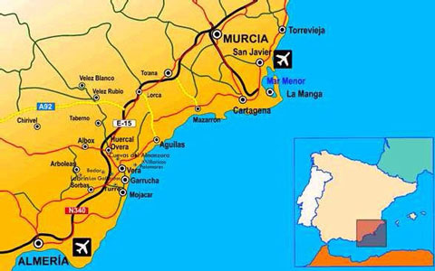
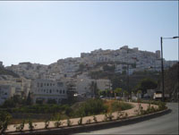
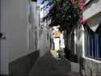
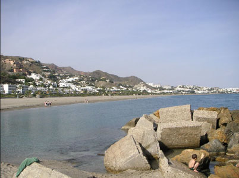
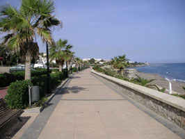
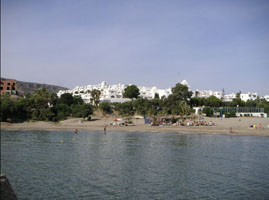

Mojácar is situated in the Almeria region of Southern Spain. By car, both Alicante and Murcia airports are 2 1/2 hours east and Almeria airport is 45 minutes west.
 Mojácar is an engaging, beautiful and romantic corner of Spain, the pueblo (old town) is perched high on a hill full of white-washed houses, cool courtyards and cobbled streets overlooking the sea and long sandy beaches. A focal point for artists and writers throughout the ages, Mojácar with its Moorish appearance and commanding views will fascinate, beguile and completely captivate you. The Playa hugs the coastline for about 7Km below the old town. From here you can enjoy walks along the promenade, restaurants, beach bars and cafes.
Whether it is sailing, fishing, bowling, tennis, golf or watersports that take your fancy, or simply relaxing on an uncrowded beach soaking up the sun, you will find it all and more in and around Mojácar.
Once you have experienced the unique charm of Mojácar, it will always remain with you.

Bordered by the Tabernas Desert with its dramatic landscapes and warmed by the Mediterranean,
Almeria is flavoured with unrivalled average hours of sunshine and high temperatures all year
round. Beautiful, unspoiled beaches, majestic coastlines and whitewashed mountain villages bring
you the taste of Spain.
With a truly welcoming atmosphere, it's no surprise that visitors return to Mojácar year
after year.
Mojácar has a perfect all-year-round climate with the best record in the whole of Spain for warm, dry weather. Temperatures are regularly in excess of 16°C (61°F) in the winter and 27°C (81°F) in the summer.
 